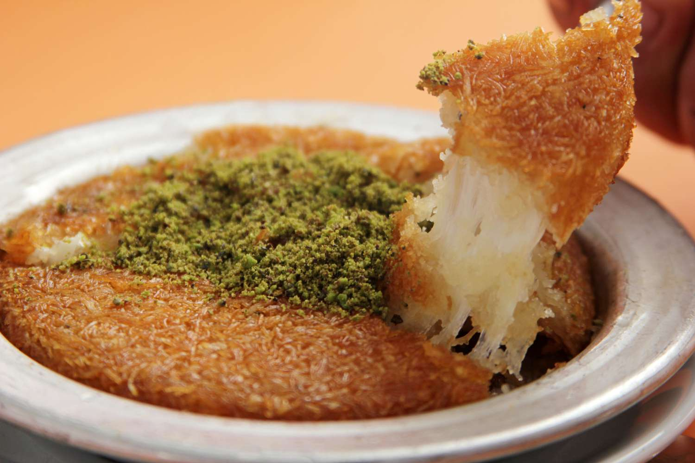

Kunefe

Description
Kunefe is a Middle Eastern dessert made with shredded phyllo dough layers, sweet cheese filling, and fragrant syrup. To make it, coat shredded phyllo dough in butter, create a base layer in a baking dish, add a layer of sweet cheese, top with more dough, and bake until golden and crispy. Pour syrup over it when it's hot, garnish with nuts, and serve warm for a delightful dessert.
Ingredients
- Kadayif (shredded phyllo dough)
- Unsalted butter, melted
- Sweet, mild cheese (such as mozzarella or akkawi)
- Sugar
- Water
- Lemon juice
- Rose or orange blossom water (optional)
- Crushed pistachios or finely chopped nuts for garnish
Instructions
- Prepare the Syrup:
In a saucepan, combine 1 cup of sugar and 1 cup of water.
Bring the mixture to a boil, then reduce the heat and let it simmer for about 10 minutes until it thickens slightly.
Add 1-2 tablespoons of lemon juice and, if desired, a few drops of rose or orange blossom water for a delightful aroma.
Once the syrup reaches a desirable consistency, remove it from the heat and let it cool. Set it aside for later use.
- Prepare the Kadayif Layers:
Start by finely shredding the kadayif (shredded phyllo dough) in a bowl.
Drizzle melted unsalted butter over the kadayif and mix thoroughly until it's evenly coated.
- Layering in the Baking Dish:
Take half of the buttered kadayif and press it firmly into the bottom of a well-greased baking dish, forming the base layer.
Spread a layer of sweet, mild cheese (mozzarella or akkawi) evenly over the kadayif base.
Cover the cheese layer with the remaining buttered kadayif to create the upper layer.
- Baking:
Preheat your oven to around 350°F (175°C).
Bake the kunefe in the preheated oven for approximately 30-40 minutes, or until it turns a beautiful golden brown and becomes crispy.
- Soaking:
As soon as you take the kunefe out of the oven, pour the cooled syrup evenly over the hot pastry. Allow it to soak in and sweeten the layers.
- Garnish:
Finish by sprinkling crushed pistachios or finely chopped nuts on top of the kunefe for added flavor and texture.
- Serving:
Serve the kunefe warm to enjoy the contrasting textures of crispy and gooey, along with the delightful sweetness of the syrup.
Return to the Menu